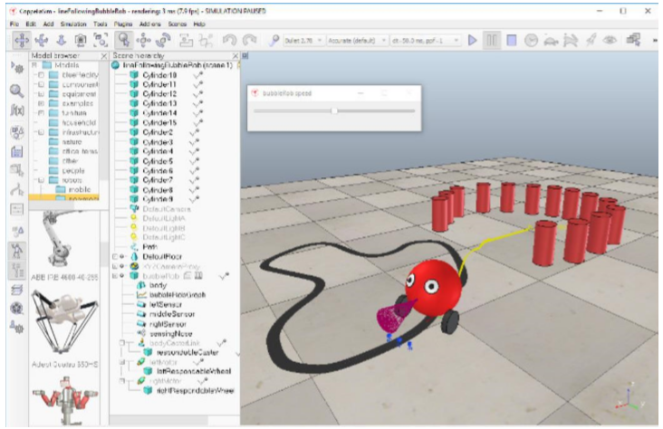
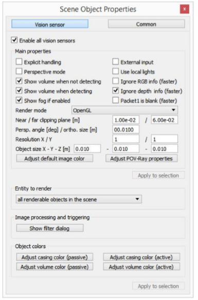
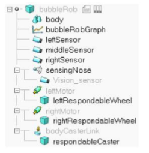
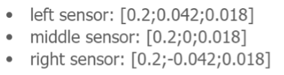

BubbleRob <<
Previous Next >> simulation
Line following
由40723243提供
Line following BubbleRob tutorial
使 BubbleRob 沿著固定軌跡的教程
In this tutorial we aim at extending the functionality of BubbleRob to let him/her follow a line on the ground. Make sure you have fully read and understood the first BubbleRob tutorial. This tutorial is courtesy of Eric Rohmer.
在本教程中，我們要擴展 BubbleRob 的功能，以使他遵循地面上的軌跡。確保您已經
閱讀並理解了第一個 BubbleRob 教程。本教程由 Eric Rohmer 提供。
Load the scene of the first BubbleRob tutorial located in CoppeliaSim's installation folder, in tutorials/BubbleRob. The scene file related to this tutorial is located in tutorials/LineFollowingBubbleRob. Following figure illustrates the simulation scene that we will design:
在 CoppeliaSim 的安裝文件夾中的 tutorials / BubbleRob 中加載第一個 BubbleRob 教程的場景。與本教程相關的場景文件位於 tutorials / LineFollowing BubbleRob 中。下圖說明了我們將設計的仿真場景：

We first create the first of 3 vision sensors that we will attach to the bubbleRob object. Select [Menu bar --> Add --> Vision sensor --> Orthographic type]. Edit its properties, by double-clicking on the newly created vision sensor icon in the scene hierarchy, and change the parameters to reflect following dialog:
我們首先創建三個視覺傳感器中的第一個，並將其附加到 bubbleRob 物件中。選擇
[Menu bar -> Add -> Vision sensor -> Orthographic type]。通過雙擊場景中新創建的視覺傳感器圖標來編輯其屬性，並更改參數以反映以下對話框：

The vision sensor has to be facing the ground, so select it, and in the orientation dialog, on the orientation tab, set [180;0;0] for the Alpha-Beta-Gamma items.
視覺傳感器必須面向地面，因此選擇它，然後在“orientation”對話框中的
“orientation”選項上，將“ Alpha-Beta-Gamma”項設置為[180; 0; 0]。
We have several possibilities to read a vision sensor. Since our vision sensor has just one pixel and operates in an easy way, we will simply query the average intensity value of the image read by our vision sensor. For more complex cases, we could have set-up a vision callback function. Now copy and paste the vision sensor twice, and adjust its names to leftSensor, middleSensor and rightSensor. Make bubbleRob their parent (i.e. attach them to the bubbleRob object). Your sensors should now look like this in the scene hierarchy:
我們有幾種可能可以讀取視覺傳感器的方式。由於我們的視覺傳感器只有一個像素，
並且操作簡單，因此我們只需查詢視覺傳感器讀取的圖像的平均強度值即可。對於更
複雜的情況，我們可以設置視覺回調函數。現在，複製並貼上視覺傳感器兩次，並將
其名稱調整為 leftSensor，middleSensor 和 rightSensor。將 bubbleRob 設置為其父級
（即，將其附加到 bubbleRob 對象）。現在，您的傳感器在場景層次中應如下所示：

Let's position the sensors correctly. For that use the position dialog, on the position tab, and set following absolute coordinates:
讓我們正確放置傳感器。為此，使用位置對話框，在位置選項上，並設置以下絕對坐標：
左傳感器：[0.2; 0.042; 0.018]
中間傳感器：[0.2; 0; 0.018]
右傳感器：[0.2; -0.042; 0.018]

Now let's modify the environment. We can remove a few cylinders in front of BubbleRob. Next, we will build the path that the robot will try to follow. It is probaby better to switch to a top view from now on: select page 4 via the page selector toolbar button. Then click [Menu bar --> Add --> Path --> Circle type]. Enable the object movement with the mouse. You have two possibilities to adjust the shape of the path:
現在我們可以修改環境。我們可以移去 BubbleRob 前面的幾個圓柱體。接下來，我們
將構建機器人將嘗試使機器人遵循的路徑。從現在開始最好切換到頂視圖：通過頁面
選擇器工具欄按鈕選擇頁面 4。然後單擊[菜單欄->添加->路徑->圓圈類型]。使用鼠標
啟用對象移動。您可以通過兩種方式調整路徑的形狀：
1. 選擇路徑（並且只有路徑）後，按住 Ctrl 並單擊其控制點之一。然後可以將它們
拖動到正確的位置。
2. 選擇路徑後，進入路徑編輯模式。在那裡，您可以自由地調整各個路徑控制點。
Once you are satisfied with the geometry of the path (you can always modify it at a later stage), select it, and uncheck Show orientation of points, Show path line and Show current position on path in the path properties. Then click Show path shaping dialog. This opens the path shaping dialog. Click Path shaping enabled, set the type to horizontal segment, and Scaling factor to 4.0. Finally adjust the color to black. There is a last important adjustment we have to make to the path: currently, the z-position of the path coincides with the zposition of the floor. The consequence is that sometimes we see the path, sometimes the floor (this effect is known as z-fighting in the openGl jargon). This not only affects what we see, but also what the vision sensors see. In order to avoid problems linked to z-fighting, just move the position of the path object up by 0.5 mm.
一旦對路徑的幾何形狀滿意（您隨時可以在以後的階段對其進行修改），請選擇它，
然後在路徑屬性中取消“Show orientation of points 顯示點的方向”，“Show path line
顯示路徑線”和“Show current position on path in the path properties 顯示路徑上的當
前位置”。然後單擊顯示路徑外型的對話框。這將打開路徑外型對話框。單擊啟用路
徑外型，將類型設置為水平線段，並將縮放因子設置為 4.0。最後將顏色調整為黑
色。我們必須對路徑進行最後一個重要的調整：當前，路徑的 z 位置與地板的 z 位置重合。結果是有時我們會看到路徑，有時會看到地板（這種效果在 openGl 中被稱為“z-fighting”）。這不僅影響我們所看到的，而且還會影響視覺傳感器所看到的。為了避免與 z-fighting 有關的問題，只需將路徑對象的位置向上移動 0.5 毫米
The last step is to adjust the controller of BubbleRob, so that it will also follow the black path. Open the child script attached to bubbleRob, and replace it with following code:
最後一步是調整 BubbleRob 的控制器，使其也將遵循黑色路徑。打開附加到
bubbleRob 的子腳本，並將其替換為以下代碼：
function speedChange_callback(ui,id,newVal)
speed=minMaxSpeed[1]+(minMaxSpeed[2]-minMaxSpeed[1])*newVal/100
end
function sysCall_init()
-- This is executed exactly once, the first time this script is executed
bubbleRobBase=sim.getObjectAssociatedWithScript(sim.handle_self)
leftMotor=sim.getObjectHandle("leftMotor")
rightMotor=sim.getObjectHandle("rightMotor")
noseSensor=sim.getObjectHandle("sensingNose")
minMaxSpeed={50*math.pi/180,300*math.pi/180}
backUntilTime=-1 -- Tells whether bubbleRob is in forward or backward mode
floorSensorHandles={-1,-1,-1}
floorSensorHandles[1]=sim.getObjectHandle("leftSensor")
floorSensorHandles[2]=sim.getObjectHandle("middleSensor")
floorSensorHandles[3]=sim.getObjectHandle("rightSensor")
-- Create the custom UI:
xml = '<ui title="'..sim.getObjectName(bubbleRobBase)..' speed" closeable="false" resizeable="false" activate="false">'..[[
<hslider minimum="0" maximum="100" onchange="speedChange_callback" id="1"/>
<label text="" style="* {margin-left: 300px;}"/>
</ui>
]]
ui=simUI.reate(xml)
speed=(minMaxSpeed[1]+minMaxSpeed[2])*0.5
simUI.setSliderValue(ui,1,100*(speed-minMaxSpeed[1])/(minMaxSpeed[2]-minMaxSpeed[1]))
end
function sysCall_actuation()
result=sim.readProximitySensor(noseSensor)
if (result>0) then backUntilTime=sim.getSimulationTime()+4 end
-- read the line detection sensors:
sensorReading={false,false,false}
for i=1,3,1 do
result,data=sim.readVisionSensor(floorSensorHandles[i])
if (result>=0) then
sensorReading[i]=(data[11]<0.3) -- data[11] is the average of intensity of the image
end
print(sensorReading[i])
end
-- compute left and right velocities to follow the detected line:
rightV=speed
leftV=speed
if sensorReading[1] then
leftV=0.03*speed
end
if sensorReading[3] then
rightV=0.03*speed
end
if sensorReading[1] and sensorReading[3] then
backUntilTime=sim.getSimulationTime()+2
end
if (backUntilTime<sim.getSimulationTime()) then
-- When in forward mode, we simply move forward at the desired speed
sim.setJointTargetVelocity(leftMotor,leftV)
sim.setJointTargetVelocity(rightMotor,rightV)
else
-- When in backward mode, we simply backup in a curve at reduced speed
sim.setJointTargetVelocity(leftMotor,-speed/2)
sim.setJointTargetVelocity(rightMotor,-speed/8)
end
end
function sysCall_cleanup()
simUI.destroy(ui)
end
You can easily debug your line following vision sensors: select one, then in the scene view select [Right-click --> Add --> Floating view], then in the newly added floating view select [Right click --> View --> Associate view with selected vision sensor].
您可以輕鬆地調試以下視覺傳感器的線：選擇一個，然後在場景視圖中選擇[右鍵->添加->浮動視圖]，然後在新添加的浮動視圖中選擇[右鍵->視圖- ->將視圖與選定的視覺傳感器關聯]。
Finally, remove the auxiliary items that were added in the first BubbleRob tutorial: remove the image processing vision sensor, its associated floating view, the floating view representing the obstacle clearance. Remove also the distance calculation object via the distance dialog. That's it!
最後，刪除在第一個 BubbleRob 教程中添加的輔助項：刪除圖像處理視覺傳感器，其關聯的浮動視圖，該浮動視圖表示障礙物的清除。通過距離對話框也刪除距離計算對象。
BubbleRob <<
Previous Next >> simulation